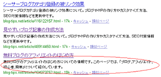

seesaaブログのdescriptionをカスタマイズ
検索エンジンの検索結果で、ブログのメタタグで設定した説明文が表示されることが多いと思うんですけど、そのページ内容が分かるような適切な説明文を記入するべきなんだそうです。
メタタグ部分の description を適切に記入することで、ブログ説明文の品質が高くなると、ある程度は設定した文章が検索結果でも表示されるって話です。
このブログでもアクセス解析の検索キーワードを見てみると、「当ブログにはそのコンテンツ内容はないんです、、」っていうようなキーワードがけっこうあるんですけど、やっぱそれはブログ運営者が適切な description 設定をしていないせいだと思うんです。
検索エンジン好みのブログdescription
description のメタタグは、つまるところはブログ訪問者さまのためだと思うんですけど、試しに、当ブログのインデックスからdescriptionタグの部分を眺めてみると、だいたいこんな感じになっているようです。

上のふたつは今までのdescription部分なんですが、下のエントリーは昨日カスタマイズしたやつがすでに反映済みのブログ説明内容となっています。
今までのこのブログの場合、「記事タイトル＋ブログ説明」っていう感じだったんで、全ての記事で、ブログ説明の部分はかぶってしまう感じだったんです。
でも昨日、descriptionのメタタグカスタマイズしてこんな感じにしてみたんです。
「記事タイトル」についての情報です。このページでは「キーワード１、キーワード２、、」について紹介しています。通常のメタタグブログカスタマイズの場合、ブログタイトルも入れたり、ブログ説明の部分も入れるパターンも多いかと思いますが、検索者が知りたいのは、そのページに何が書かれているかだと思うんです。
上のふたつはちょっと自分でも意味がわかんないですが、昨日カスタマイズした部分は、キーワードの部分で若干インパクトがあるような気もします。
ひょっとしたら、キーワード部分を先に持ってきた方がいいっぽい気もしないではないです。
グーグルによると、明確でそのページにあった、質の高い説明をする必要があるみたいなんですけど、キーワードの羅列みたいなのでもいいようで、必ずしも文章形式である必要はないようです。
そんなわけで、当ブログの description 説明にも、キーワードの要素を加えてみたのですが、ヤフーの場合は、やはり文章形式の方が好きなのかなという気もします。
その辺を組み合わせて、当ブログのメタタグはキーワードを強調した形のこんな感じになりました。
<meta name="description" content="<% if:extra_title %><% extra_title %>についての情報です。このページでは、「<% extra_keywords | oneline | tag_strip %>」について紹介しています。<% else -%><% blog.description | nl2br | tag_strip %><% /if %>" />
この場合、カテゴリや過去ログ？などのページで辺な感じになるので、それぞれのページで場合わけをする必要があってめんどくさいですが、場合分けについては、一応過去ログのブログのタグタイトルをSEOカスタマイズあたりに書いてます。
ブログの場合はホームページと違って、機械的にメタタグを出力するほかないですが、シーサーブログや mt なら、わりと詳細な設定カスタマイズができるので、お試しになってみてはいかがかと思います。
- ブログのメタデータをカスタマイズ
ブログのメタデータには、キーワード設定とかブログ説明というのがありますが、最近ウェブマスターツールにログインしてみたら、以前よりもコンテンツ分析の問題が細分化されているような気がします。メタタグの重複...